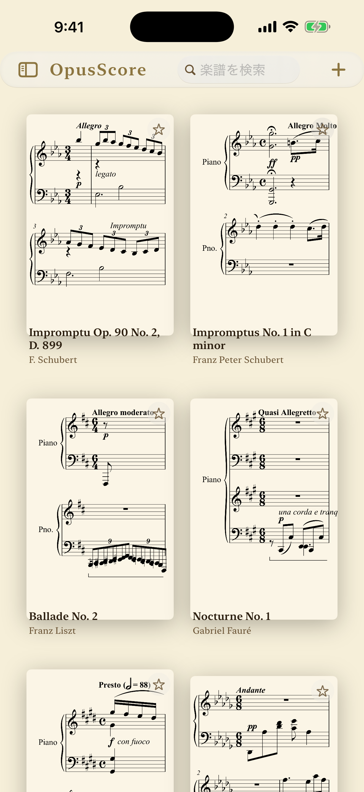
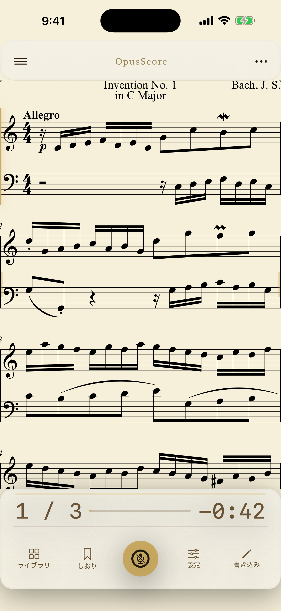
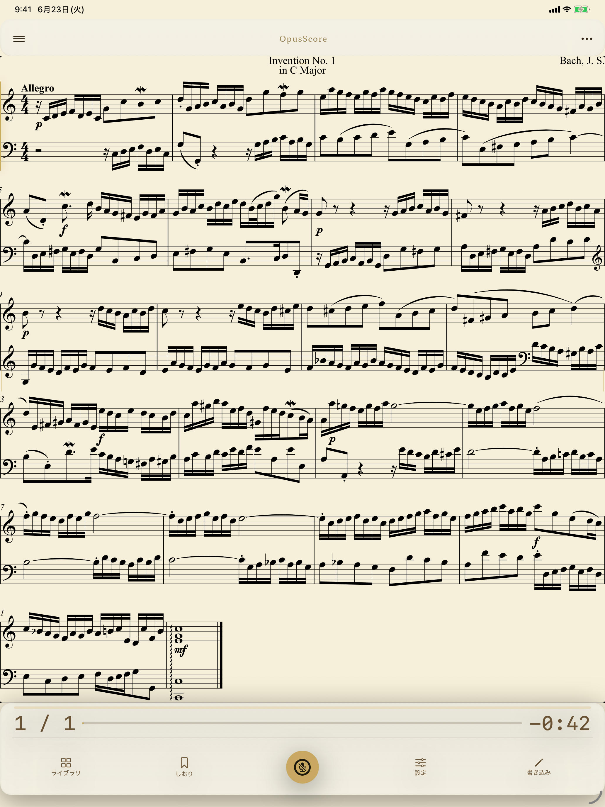

演奏を聴いて、自動で譜めくり。
OpusScoreは、ピアノ演奏をマイクで聴き取り、楽譜上の現在位置をリアルタイムに追いかけるアプリです。収録サンプル曲とMusicXML取り込みに対応し、処理は端末内で完結します。
App Storeで公開中です。



できること
ライブ演奏追従マイクで聴き取った演奏に合わせて現在位置を表示し、自動で譜めくりします。
MusicXML対応収録サンプル曲に加え、手持ちのMusicXML/MXLを読み込めます。
通信なし音声解析は端末内のみ。録音・保存・送信は行いません。